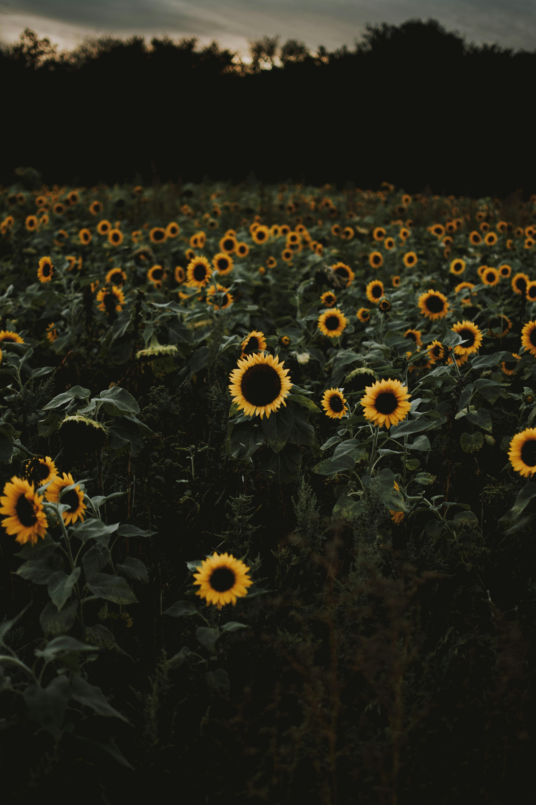

Sunflower
Origin
Native Americans cultivated the sunflower from its original bushy, multi-headed type to produce a single-stemmed plant bearing a large flower.
Sunflower
Care
Tall sunflower varieties, especially those that grow to be 8-12 feet tall, may need staking or support to keep them upright, especially in windy areas. Use stakes or poles to prevent the stems from bending or breaking under their own weight.
- Direct Sunlight
- Well-drained, moderately rich soil
- Grow best in warm temperatures
Space the seeds or seedlings about 6-12 inches apart for smaller varieties and 18-24 inches for larger ones to allow for healthy growth and air circulation.
More Research
Here are some articles that I got some of the above information/more research you can do on your own.